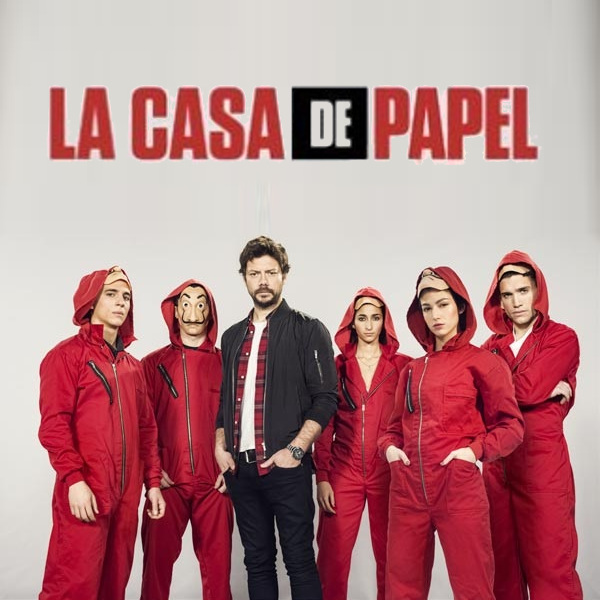
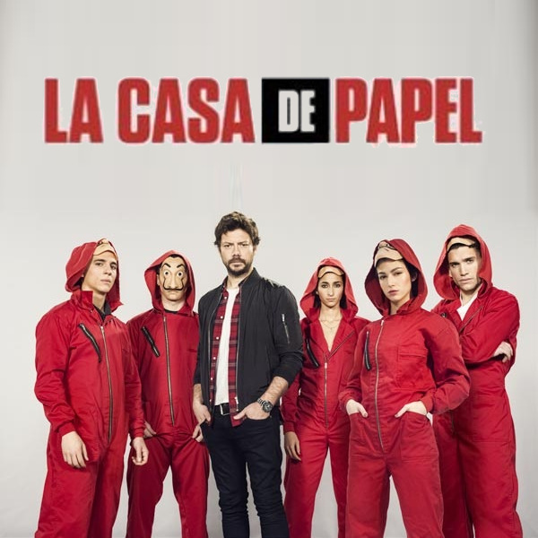
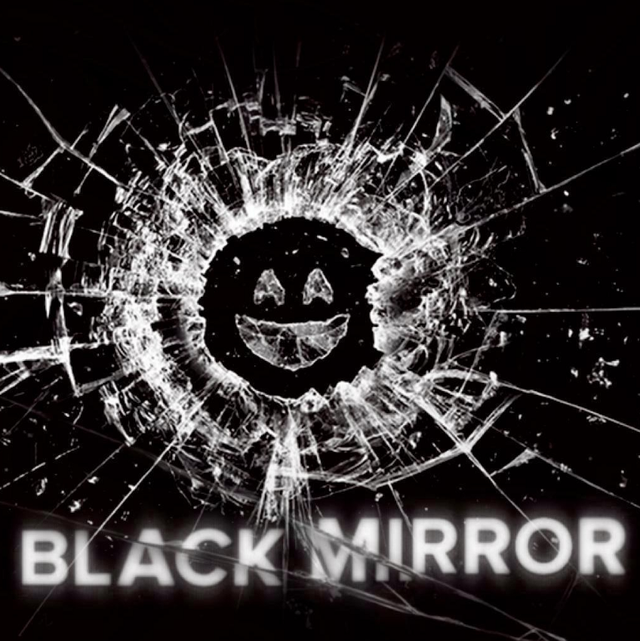
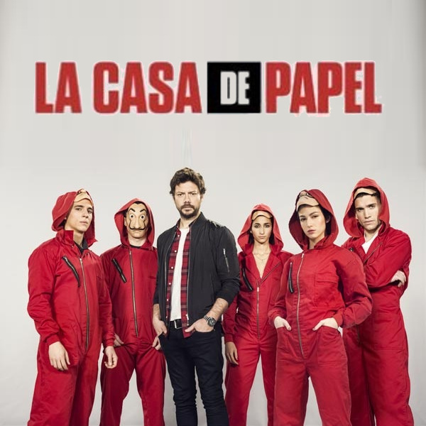

Black Mirror - Netflix 
Black Mirror es una serie de televisión antológica británica de ciencia ficción distópica creada por Charlie Brooker y producida por Zeppotron para Endemol. Descrita por su productora como «un híbrido de The Twilight Zone y Relatos de lo inesperado que se nutre de nuestro malestar contemporáneo sobre nuestro mundo moderno» la serie se caracteriza por presentar relatos distópicos autoconclusivos que muestran generalmente un sentimiento de «tecno-paranoia» y analizan cómo la tecnología afecta al ser humano.
